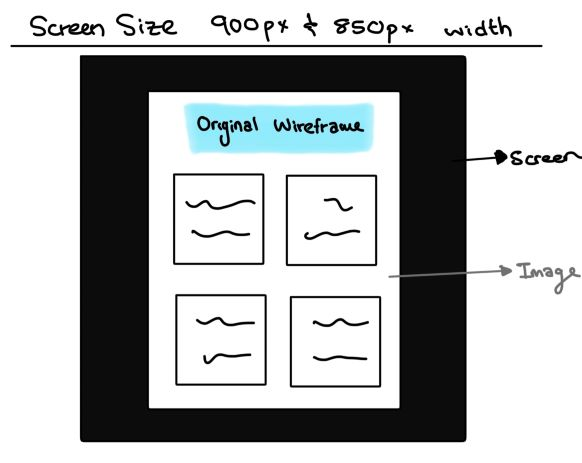

Implimentation Notes
Assignment 1-
I have only used HTML and CSS for this website. My folder structure is created from placing each webpages information in one folder. For example, all blog HTML scripts, and blog CSS script is placed in one folder, the index.html and style.css scripts are placed in a folder called homepage and so on for the other sections. These folders are in a chronological order. I have used presentation layer when coding the different sections. My semantic markup does provide sufficient context and information to the browser. The interface elements and content are expressed fully and correctly. The usability is portrayed through accessibility, clarity, and mobile responsiveness. Although accessibility, SEO and consistency can be improved on. I have tried to use consistent tag containers and styling conventions throughout the website in terms of positioning, font sizes, margin sizes etc. My CSS codes are more scalable with modular aspects, but I hope I can make my websites maintainable soon. I have tried to adapt the responsive layouts of screen sizes, some websites have a fantastic response to sizing down the screen, others not so much but this is due the width as I have not considered all the possible screen sizes, only two others. On my wireframe page, my images are coded to be fully viewed when click on them, unfornately the exit button when one image is in full view is not visible, yrtthere is code present for the exit button which is commented out. Users are advised to use the brower back button to return to the wireframe gallery and art gallery which are the only two places this feature is used. I have implimented my HTML and CSS codes in a way that provides effective impact in the UI and UX systems functionally and intuitively.
Image representing screen sizes 900px and 850px width
Changes Made From Assignment 1 For Assignment 3-
This is a reflection on the implementation and appearance changes that I made to this website from Assignment 1's feedback. I will be mentioning responsive design choices I have made along with how I implemented Document Object Model (DOM) in relation to the HTML and CSS I have used. The feedback that was provided from assignment 1 was extremely helpful and insightful for the improvements I have incorporated.
APPEARANCE of USER INTERFACE (UI) AND USER EXPERIENCE (UX)-
Appearance wise I took the advice from the provided feedback and made a return button that is like the scroll to the top button I had implemented for assignment 1. This button allows the user to return to the overview page of the section they are on which is either the blog section or design section. In these sections I have created a “next page” button. Instead of the words “next” and “back”, I used arrows instead, this displays a more pleasing interaction with the buttons. The back button now refers to the previous blog rather than to the overview page. Taking lecturer Hanli Geyser’s advice into account I made sure to always keep the navigation bar visible on all pages. This allows a user to not have to scroll right to the top to change the webpage. The scroll to top button is still present.
The gallery for the wireframe images has been changed as well. Users can now click onto images to view them much larger while using a slider to view each image without having to back and click on each image individually. With these images I have added the alt text along with captions to indicate what the image represents, which I had gullibly forgot to add for assignment 1. Throughout the website I have increased the font size where needed and sized down the fonts in accordance with the media queries.
I have changed my homepage and portfolio page a bit. I simply put the image icon from the portfolio profile section to the homepage as that image’s purpose is to showcase who I am. Overall, I did not try to change a lot of the appearance of the website as I am content with the way most of the webpages look, besides the portfolio page which needs some work. I have added my assignment 2 essay to the essay webpage as well as blogs for weeks 8-13.
CODE IN HTML, CSS, JAVASCRIPT and DOM-
Taking the feedback from assignment 1 into account I managed to replace and add what was needed. A grave mistake I had made was not layering out proper ordered syntax, I mistakenly forgot to add the header and main syntax which is common knowledge yet slipped my mind which of course costed me marks. In addition to taking responsibility for the syntax error I have replaced and added microformats along with the tags "br" and "div" which was another error I had made in assignment 1. I have used "p" and "section" mostly across my website. I have also added the alt text to images as mentioned above as well as tried making the referencing links actual links. The MDN Web Doc is a great resource for beginner web developers like me.
The new additions I have added to my website in terms of JavaScript are the gallery for the wireframe images which I have mentioned above. I have also added an appearance animation as well as a search bar. Unfortunately, these scripts are ready to be used but there were some issues I was facing with other elements of the website so for now they are currently “hidden” on the website. The search bar will, hopefully be used in accordance with an API I would like to administer.
DOM of JavaScript was one of my biggest challenges for this assignment. I don’t think I did a good job, and I will improve on this skill over time. I have made DOM of JavaScript with the navigation bar, blog post overview page using an array, design gallery section, and the essay. I am not confident in my JavaScript skills hence why this is one of the biggest risks in losing marks for this assignment.
MEDIA QUERIES-
From assignment 1, I learnt that the media query sizes I used were not utilised in the correct manner. I decided that I would use 4 different screen size resolutions: 1500px, 800px, 500px and 400px. The 850px were part of the codes from assignment 1, hence why that code is still present in the CSS scripts. The 1500px screen resolution should enable a person using a laptop of 1440px screen size to view the website without any worries. The 800px screen resolution can accommodate a tablet size of 768px and the 400px screen resolution will be used to size down a mobile phone screen of 375px-320px allowing for easy on the go access. These screen size resolutions are beneficial to the user as they can experience this website wherever they are on any device that accommodates these sizes creating a friendly user experience.
I really did enjoy this course and learnt quite a couple of new skills I will gladly improve upon. Doing these assignments, essays and blogs gave me insight on how the world works with technology especially with regards to the world wide web and its responsibilities. I do hope I will present a very great website that incorporates all the necessary user interface elements needed to provide a relaxed user experience.
References:
Available at: https://developer.mozilla.org/en-US/[Accessed 20 May 2023].